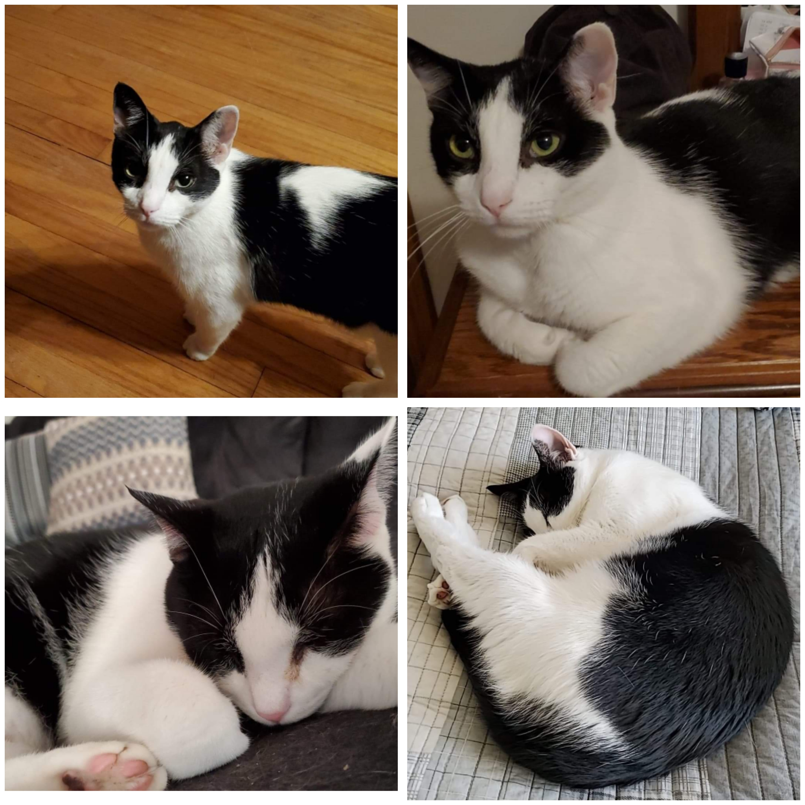

Oreo has not had it easy. He came to us from off the streets in the middle of no where as a kitten. He is not the brightest bulb in the box but his goofy personality will make you smile! He is skittish but warms up to new people after some time. He loves to be petted and his favorite treats are chicken gravy and belly rubs! Check out kitty checklist on our homepage to see if you can adopt Oreo today!
